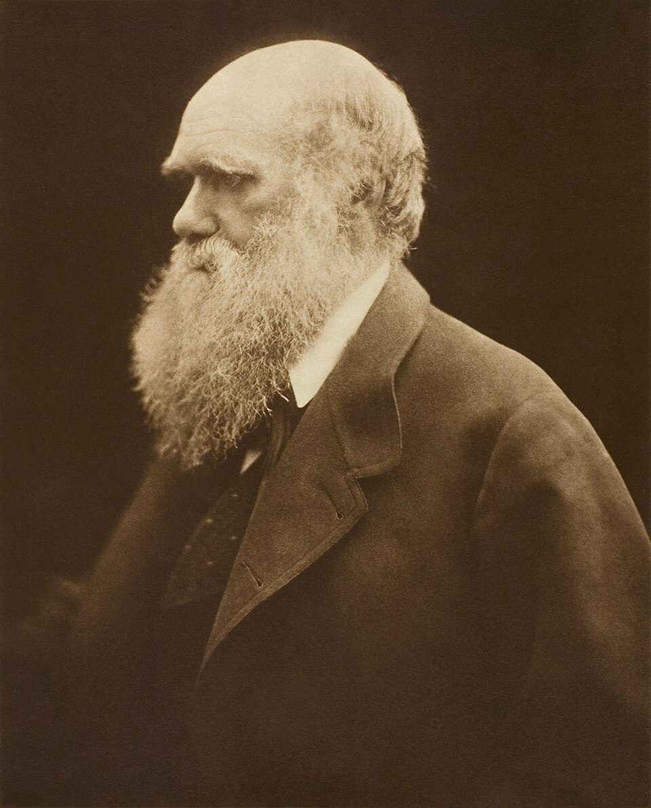
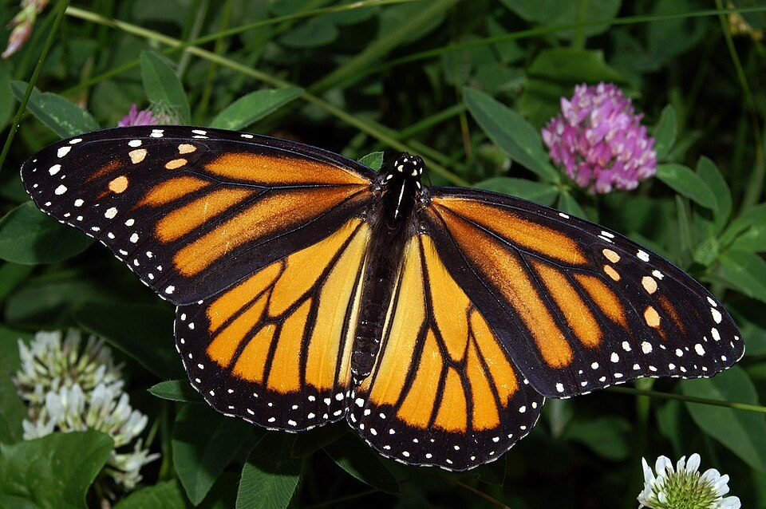

Planeta Tierra · 7 fichas
Vida y ecosistemas
Cómo empezó la vida, cómo evoluciona, la asombrosa biodiversidad del planeta, sus grandes ecosistemas y las extinciones que lo cambiaron todo.
La Tierra es el único lugar del universo donde sabemos con certeza que hay vida. Lleva aquí más de 3.500 millones de años, ha sobrevivido a glaciaciones, asteroides y volcanes, y ha llenado cada rincón del planeta, del fondo del mar a las cumbres heladas.
 El origen de la vidaDe moléculas a células: las pistas sobre cómo surgió la vida en la Tierra hace más de 3.500 millones de años, y los seres que viven en condiciones extremas.
El origen de la vidaDe moléculas a células: las pistas sobre cómo surgió la vida en la Tierra hace más de 3.500 millones de años, y los seres que viven en condiciones extremas.
La evoluciónDarwin, la selección natural y el ADN: cómo los seres vivos cambian con el tiempo, de los dinosaurios a las aves y de los primeros homininos a Atapuerca.
La biodiversidadMillones de especies, la mayoría aún sin nombre: qué es la biodiversidad, dónde se concentra y por qué España es uno de los países más ricos de Europa.- Bosques y selvasTres billones de árboles: la Amazonia, la taiga, las secuoyas gigantes y los bosques de España, de la dehesa a la laurisilva.
 Arrecifes y vida marinaLos arrecifes de coral, las praderas de posidonia y los gigantes del mar: la vida que llena los océanos y los peligros que la amenazan.
Arrecifes y vida marinaLos arrecifes de coral, las praderas de posidonia y los gigantes del mar: la vida que llena los océanos y los peligros que la amenazan. Biomas: de la sabana al hieloSabanas, praderas, tundras y polos: los grandes ecosistemas del planeta y los animales que han aprendido a vivir en los extremos.
Biomas: de la sabana al hieloSabanas, praderas, tundras y polos: los grandes ecosistemas del planeta y los animales que han aprendido a vivir en los extremos. Las grandes extincionesCinco veces la vida estuvo a punto de desaparecer. El asteroide de los dinosaurios, la Gran Mortandad y la sexta extinción que está en marcha.
Las grandes extincionesCinco veces la vida estuvo a punto de desaparecer. El asteroide de los dinosaurios, la Gran Mortandad y la sexta extinción que está en marcha.